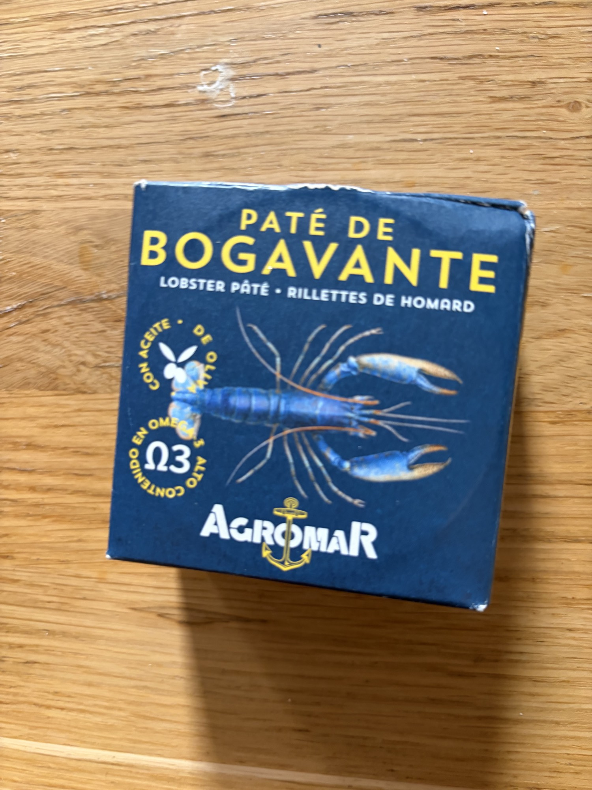

Agromar Lobster Pâté
Paté de Bogavante — luxurious lobster rillettes in olive oil.
What It Is
Agromar, an Asturian conserva house, produces a lobster pâté using bogavante — the European lobster (Homarus gammarus), distinct from the North American H. americanus and generally considered sweeter and more delicate. The pâté is a blended preparation of cooked lobster meat, lobster tomalley and coral (if included), butter or cream, and seasonings, packed in jars. It sits somewhere between a French rillette and a smooth pâté in texture. Quality markers: pale coral-pink color, smooth but not completely homogenized texture (small lobster fibers visible), clean sweet aroma, no off-odors or excessive fishiness.
Nutritional Profile
Per 100g:
- Calories: ~220–280 kcal
- Protein: 12–16g
- Fat: 18–24g (significant butter/cream and possibly added fats)
- Carbohydrates: 1–3g
- B12, zinc, selenium: good
- Sodium: ~450–650mg
- Cholesterol: notably present (shellfish + butter/cream)
Preparation & Service
Serve chilled for spread applications, or at cool room temperature for more fluid, sauce-like use. If using as a pâté on toast, 10–12°C/50–54°F is ideal — it holds its shape but is spreadable. If incorporating into a warm sauce or pasta, add off the heat and fold in gently; direct boiling will break the emulsion and cause separation. Do not microwave — uneven heating ruins the texture.
Traditional & Modern Eating Context
Lobster pâté is not deeply traditional in Spain — it is a modern luxury conserva product for the gourmet market. In Asturias, lobster is eaten simply boiled, or in arroz con bogavante. The pâté is for canapés, starters, and indulgent snacking. For VIP service, use it as a rich, unctuous element in a composed dish: a quenelle on a plate, a swirl in a bisque, or a filling for delicate pastries.
Flavor & Texture
The texture is creamy-smooth with a subtle fibrous undertone — you know it is lobster, not generic "fish pâté." The mouthfeel is rich and coating, with the butter or cream providing a luxurious, lingering quality. The flavor is distinctly lobster: sweet, briny, with the particular nutty-caramel note of cooked European lobster and, if the tomalley is included, a deeper, almost liver-like richness that adds complexity. The finish is long and savory, demanding bread or a neutral base to balance.
Pairings & Composition
- Wines: Champagne, Chablis Premier Cru, or a structured Albariño
- Bases: Brioche toast, blini, puff pastry shells, endive leaves, cucumber rounds
- Acids: Lemon, light vinegar, cornichon
- Aromatics: Chives, tarragon, cayenne (very light)
- Dish idea: Quenelle de bogavante — a neat quenelle of lobster pâté on a warm blini, topped with a single piece of pickled fennel and a few salmon roe pearls. A two-bite amuse that reads as four-star luxury.